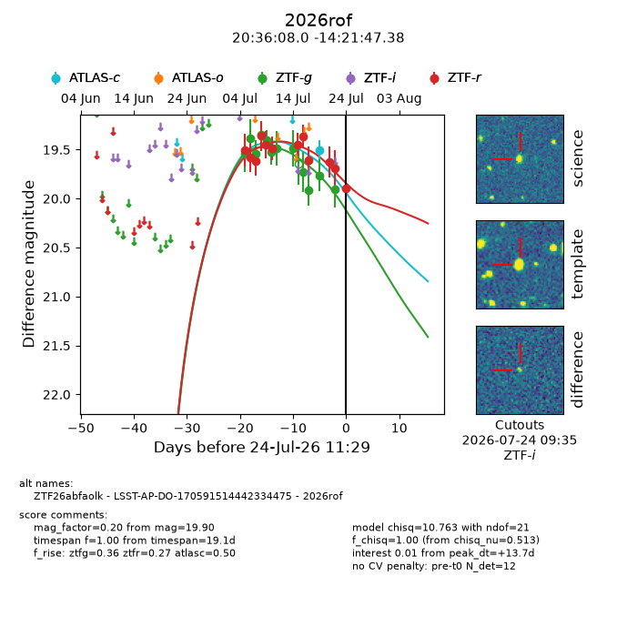
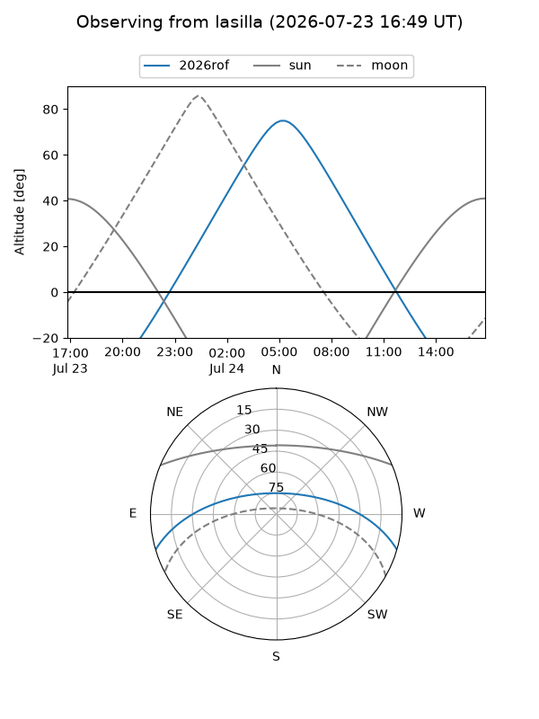
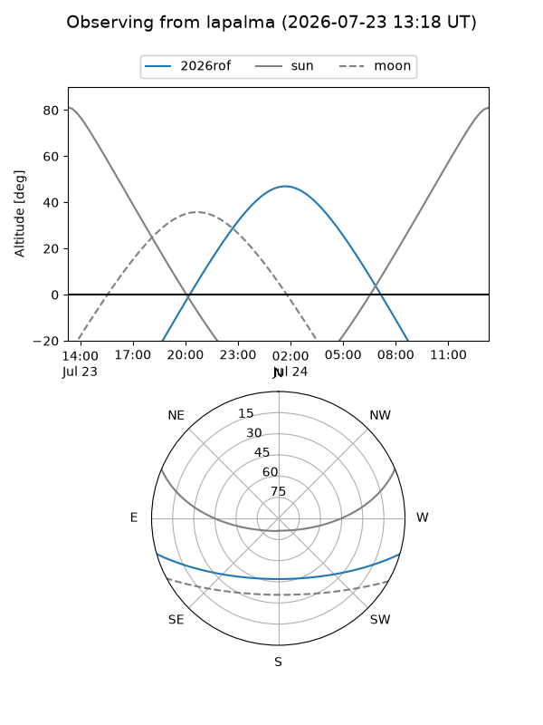
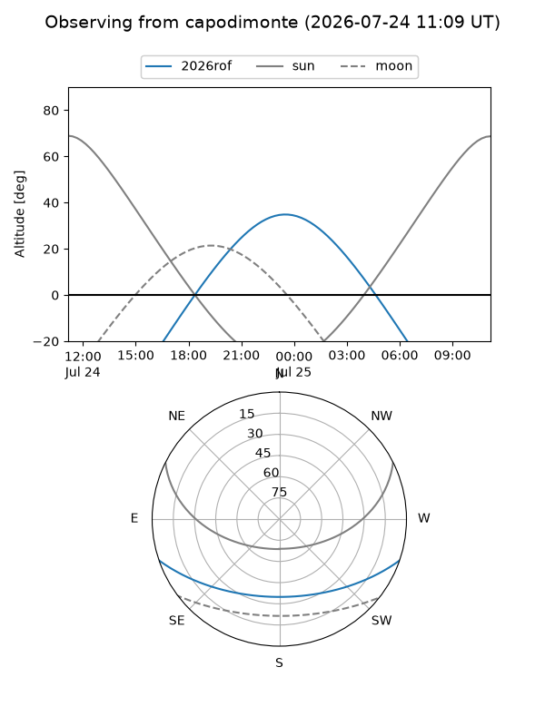
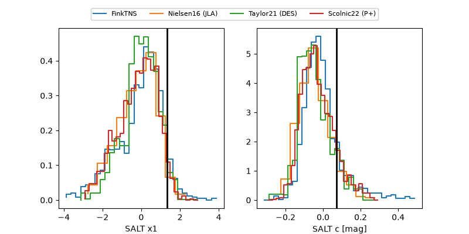

2026rof
Target 2026rof at 2026-07-24 11:31
Aliases and brokers:
FINK-ZTF: ztf.fink-portal.org/ZTF26abfaolk
Lasair-ZTF: lasair-ztf.lsst.ac.uk/objects/ZTF26abfaolk
ALeRCE-ZTF: alerce.online/object/ZTF26abfaolk
YSE-PZ: ziggy.ucolick.org/yse/transient_detail/2026rof
TNS name: wis-tns.org/object/2026rof
Direct TNS query: direct search
alt names
ZTF26abfaolk (ztf,fink_ztf)
2026rof (tns,yse)
LSST-AP-DO-170591514442334475 (iau_lsst)
Coordinates:
equatorial (ra, dec) = 309.0331,-14.36316
equatorial (HMS+DMS) = 20:36:07.96,-14:21:47.38
galactic (l, b) = (31.2235,-29.56509)
Flags:
TNS type: nan
peak dt: +13.7
Photometry:
last atlasc=19.51, ztfg=19.90, ztfr=19.90
1 atlasc, 12 ztfg, 12 ztfr detections
Lightcurve

Visibility



Additional plots
